News
- 2010-12-20:Time for one of those regular as clockwork 9 month updates. Moved to a new host. About to start a side project with something really cool and related to this. Will update the site when I have something to show. Almost 5 years since I released the first version. Wow!
- 2010-03-17:Holy moly - has it really been 18 months since I last updated this site? We switched over to using WebKit in Second Life so that's where I've been focusing my attention recently - source, demos and build instructions for all 3 platforms here - notice that interactive Flash works now across the board and that we changed the license to GPL to match Second Life. I'll update this site properly soon - in the meantime, everything below is probably wrong. Contact me if you have any questions or comments - details at bottom of this page
- 2008-09-29:I see someone else has been working on a Google Chromium based offscreen renderer - early days yet but it looks promising - I ported uBrowser to it (download) and it seems to work mostly - a few crashes but not bad considering it's an early release.
- 2008-09-07:I made a version of uBrowser that uses a hacked version of Google Chromium to render the content - exciting stuff - I'll release everything once I get it working properly.
- 2008-09-02:Google announces Chrome today (well, yesterday those of us living in Singapore :) ) and it looks like it'll really shake things up - I wonder if they're going to announce an embedding API eventually - might be easier than using WebKit directly..
- 2008-08-24:I've been playing around with a Win32 specific version of uBrowser that renders content using an embedded instance of Internet Explorer or the Flash player instead of Gecko. There are two versions and they both share a massively cheesy code name! Animal Logic - Flash only plays back Flash (specifically SWF) files while Animal Logic - IE plays Web content including most embedded Flash applications like YouTube. Both are tiny (320KB) Windows executables - no viruii, trojans or other nasties AFAICT but use at your own risk. Many things work, many things work a bit and some things don't work at all - I have no idea right now how to fix the things that are broken. For example, some Flash content in the IE version doesn't work as well as it does in the SWF version. It's very unoptimized and updates each page constantly so I've limited it to a single browser for now. Give it a try and let me know what you think. I included a few bookmarked sites in both versions - the Flash one for example has a working MAME emulator that already handles quite a few games - who's going to make a 3D virtual arcade :)
- 2008-07-12:Nuanti made some great progress on putting together a WebKit port called Meta that works with uBrowser - no updates for a long time though - Anyone know where Alp has gone?
- 2006-02-02:Released the first version
What
- LLMozLib is a library that makes it a little easier to embed the Mozilla Gecko rendering engine into your application
- It consists of a single static library, a C++ header file and some run time files required by Mozilla
- LLMozLib is available for Windows, Mac OSX and Linux
- For the Windows version, there are solution/project files for VC7 (2003) and VC8 (2005)
- I changed the name to LLMozLib2 when I moved from Firefox 1.x code (Gecko 1.8.0) to Firefox 2.x code (Gecko 1.8.1). That might have been a confusing blunder although it seemed like a good idea at the time. Perhaps I should revert it?
- In order to get some things to work - drop down menus for example - a patch is applied to the Mozilla source.
- uBrowser is the test 'mule' application that I use for testing LLMozLib
- I don't provide a prebuilt version of LLMozLib - you have to build it yourself - the instructions work if you follow the 'recipe'
- I do provide a prebuilt Windows version of the test mules - currently uBrowser and the much simpler testGL. As far as I know, they're virus and trojan free - if you don't trust me, build them yourself.
- LLMozLib and uBrowser were originally written for use in the Second Life 3D online virtual world
- The code was open sourced under a very unrestrictive license and is now used in many different applications.
- uBrowser is not meant to be a browser - it's a test application. Don't email me and ask why I bothered wasting my time making such a worthless browser. Oh, too late.
- Several things don't work including plugins, notification dialogs, and focus. I don't have solutions for these so any help is appreciated.
- This version is built against similar code to Firefox 2.0 (Gecko 1.8.1). One day I want to make it build against code similar to what's used in Firefox 3.0 (Gecko 1.9) but that means a lot of big changes.
- The first version was released in February 2006 - not nearly enough progress in 2.5 years unfortunately
- I work for Linden Lab - I used to live in San Francisco but now I live in Singapore.
Visuals
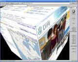 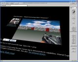 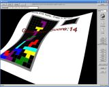 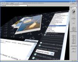 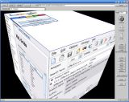 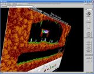 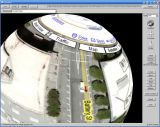 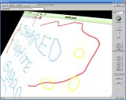 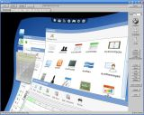 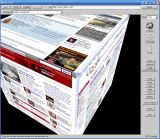 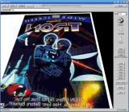 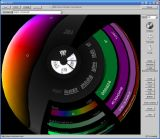 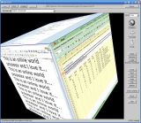 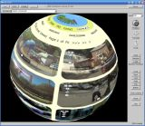
{kind=link}
{kind=link}
{kind=link}
{kind=link}
{kind=link}
{kind=link}
{kind=link}
{kind=link}
{kind=link}
{kind=link}
{kind=link}
{kind=link}
{kind=link}
{kind=link}
{kind=link}
Where
- A Wiki page that describes how to build LLMozLib on Windows, Mac OSX and Linux can be found here - it's a bit Second Life specific but everything you need is there.
- Prebuilt Win32 version of uBrowser and testGL can found here.
- Mac OSX and Linux binaries will appear here too - I'm just not able to build them myself.
- You can browse the source code directly in the Second Life SVN repository here.
Who
You can contact me, Callum Prentice by sending email here (don't forget to remove the anti-spam gibberish)